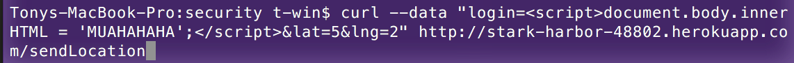
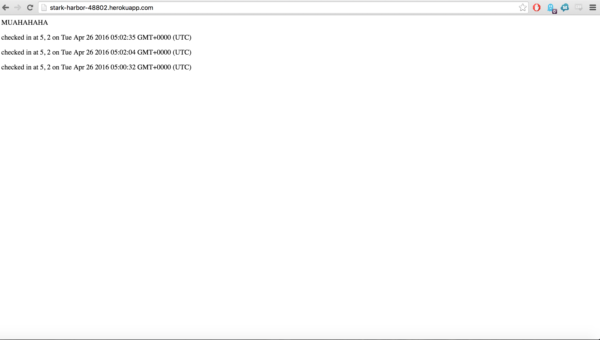
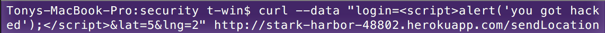
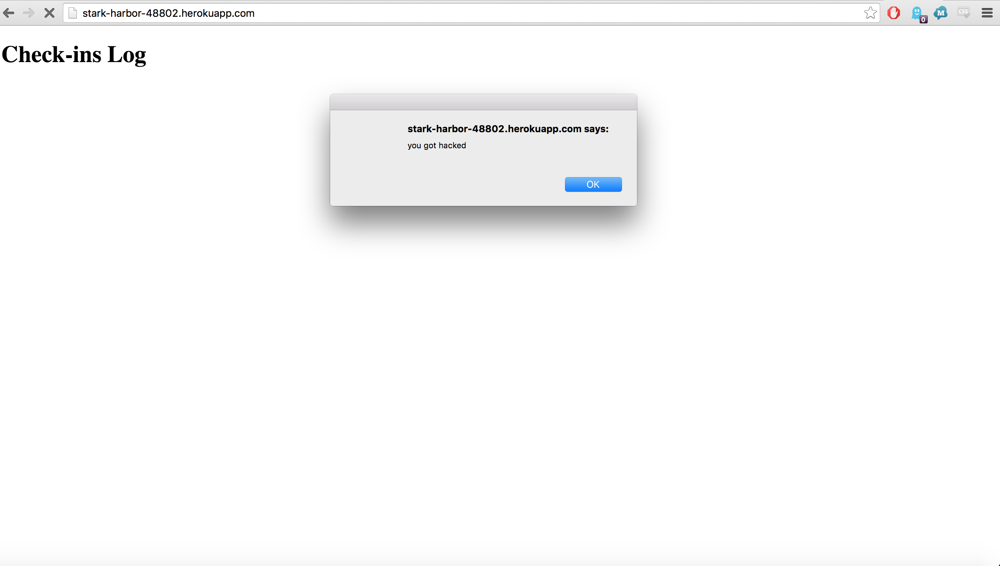
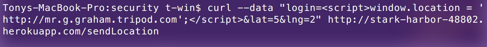
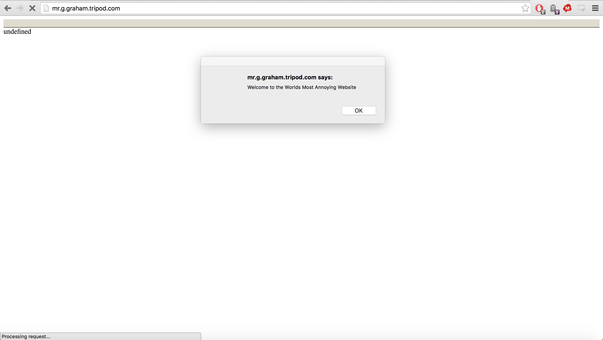
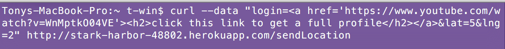
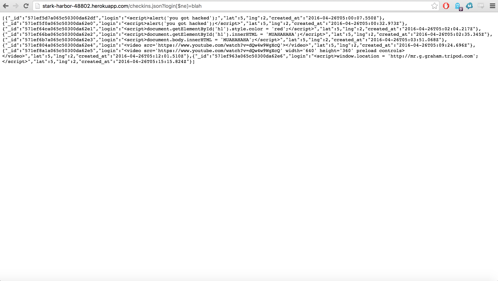

I have examined the source code of Kazi Islam's Heroku App and was entrusted to do a profile of potential security issues that he could run into with his current code. This app has three uses:
One of the main security issues I was concerned about is the fact that the app does not really check or cleanse user input. This makes it easy for other, unknown users to manipulate Kazi's page with very little effort. Thus, many of the security concerns I have noted have to do with user input because it is the simplest and most cost effective security upgrade to make. In the following sections, I will outline how I surveyed these concerns and how to fix them.
The main tool I used was posting to Kazi's server using curl. It is a command line tool available on most software systems. Because of this, it is important to note that without the suggested security fixes I am going to suggest, Kazi's app will be very vulnerable. As in anyone, anywhere can manipulate his site with a very simple, easy to use tool.
I first did a "blackbox" test: attempting to break into Kazi's site without looking at the source code. Even without looking at the source code, I was able to perform a security breach (XSS). This demonstrates that Kazi's site was already super vulnerable to a relatively straightforward attack that can be execute en mass by bots.
After doing a few blockbox tests, I then went to examine the source code. From this, I conducted more directed tests, more specifically abusing the fact that he uses a MongoDB database. As shown in later sections, this had disastrous consequences.
One last note before I go on to my findings: all of these security breaches were simple to execute. Every. Single. One. It took nothing more than using curl/a simple malicious query string to break his site. I cannot stress enough that this simple methodology was able to find huge, easily preventable security flaws. Please take note.
What I have found is simple: the app does not check user input at all. Hackers are easily able to manipulate the app's page by inserting code into the database that is then executed upon the rendering of the application page. If you go to the url right now, it redirects to the most annoying page on the internet. This may seem trivial, but it could easily redirect to a malicious site that steals client's information. Much worse, however, is the fact that the hacker can manipulate the page itself. In another part of my testing, I was able to insert a hyperlink to a YouTube video advertising boats. Not only can hackers insert ads or links to their own (malicious) content, they could conceivably mock up an webpage that looks exactly like the app, yet tracks client input.
In summation: hackers are able to insert their own code into the app. From this, they may manipulate the page as they please.
The first issue I found is Cross Site Scripting. This is where I am able to inject executable script into the app's database and have it show up when the app runs. This is primarily a problem with the sendLocation part of the app since this is where a user can post information and have it be stored in the app's database. These were executed using simple curl post commands where I inserted the script as the "login" parameter in the post. These visually show up on the index page because that is where the app shows all the checkins, and thus all the login parameters that hold the nefarious script. Here we see simple examples such as modifying the website's html or printing an alert to the browser:
Curl Command: 
Figure 1: Modification of HTML through script
Curl Command: 
Figure 2: Alert Message
A more fun one is redirecting to a completely different site, hijacking the app's url and redirecting to a hacker's own content:
Curl Command: 
Figure 3: Redirect
Here we see issues that range from annoying to downright malicious. The ability to completely hijack Kazi's URL and take users to a different website is severe. The app may become complicit in sending users to explicit, illegal content. Because of this, I'd rank this as a severe problem. The easy solution is to cleanse the user's input before storing it in the database within the sendLocation section of the node.js server (i.e. '<' to prevent the script tag from showing up). Another solution is to implement a character limit on the user input. In both cases, it will become impossible to inject script. It's simple, and it only takes a few lines of code.
Another vulnerability I found was that hackers could inject html into the app's database through the sendLocation post part of the app. Much like Cross Site Scripting, this allows hacker's content to be served instead of Kazi's. It directly adds something that was not there before into the app. For example, I was able to put a fake link onto the homepage that "displays a full profile" using another curl post command (it really sends them to an advertisement for boats):
Curl Command: 
Figure 4: HTML Injection
This spammy link could easily get ignored, but what's even more unsettling is the possibility that a hacker could create something that looks exactly like Kazi's app page, yet tracks user input and actions. The danger of injection is that app content can look exactly the same as hacker content, putting users in a position to be unaware that they are being tracked or hacked. This makes this issue quite severe because manipulation can happen at any time without much of a trace. The solution is the same as the solution to Cross Site Scripting: cleanse user input of special characters (i.e. '<'). This prevents anything from being injected into the database, and will still only take a few lines of code.
The last security flaw I will cover has to do specifically with MongoDB. It involves the fact that, yet again, it does not cleanse the users input. In this case, it moves to a different part of the app: the checkins.json part. Here we see that I was able to access every record in the checkins database by just inserting a MongoDB command into the query string:
Figure 5: MongoDB command
Though this MongoDB manipulation not only reveals the logins of those who have checked in, but also the location in which they checked in from. This is problematic because it is sensitive information. The fact that this was all done using a simple query string, not even a tool like curl, makes this hack even more accessible to even the most basic hacker. It allows the hacker to see the contents of the database with relative ease. To fix this, it is the same solution as all the others: cleanse the input of special characters (i.e. '$'). This will prevent the app from accepting the command.
For all of these solutions, the code that needs to be inserted is to find the object that stores the user input, and append this to it: ".replace(/[^\w\s]/gi, '');" and overwrite it into a new variable. This will solve these security issues and prevent hackers from manipulating the app.
The way to sum up these security issues is this: never trust user input. Other security concerns that I did not directly test was the way Kazi implemented Cross Origin Resource Sharing. For his header, he used this to allow for CORS: "res.header("Access-Control-Allow-Origin", "*");". This is problematic because there are no checks for who is accessing the apps. In the future, it would be good to change this to a system which verifies the other domain before sharing resources. All of the changes I am suggesting has little cost. They are all fixes that only take a few lines of code. They take care of some of the most common security issues that comes with posting content on the Internet. If it's so simple, why not just do it?